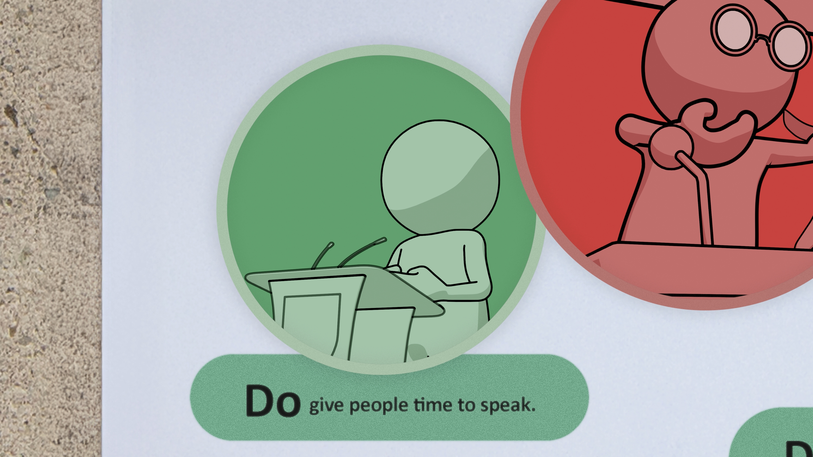
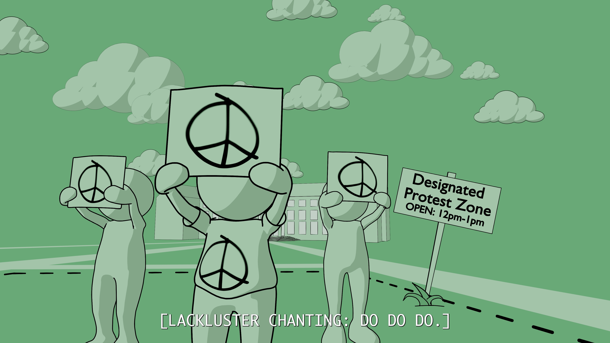
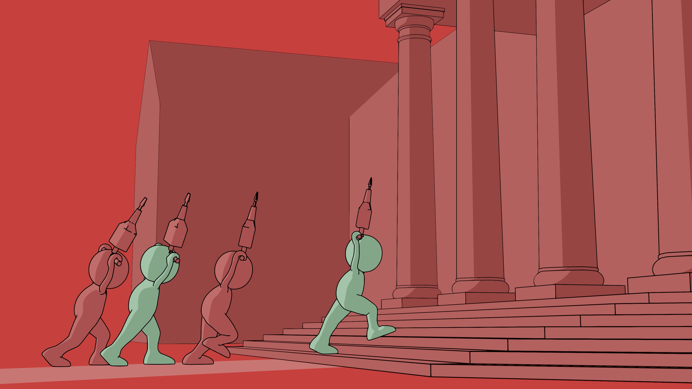
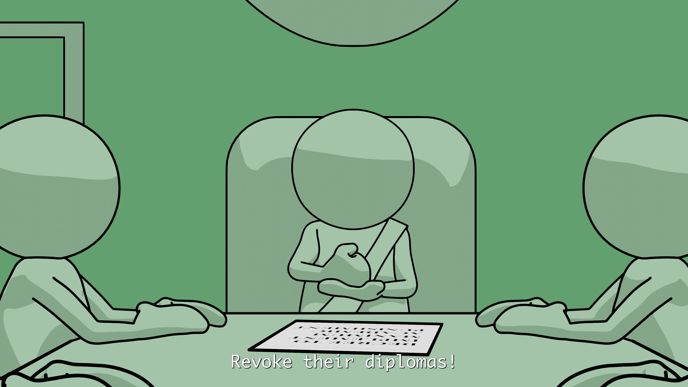
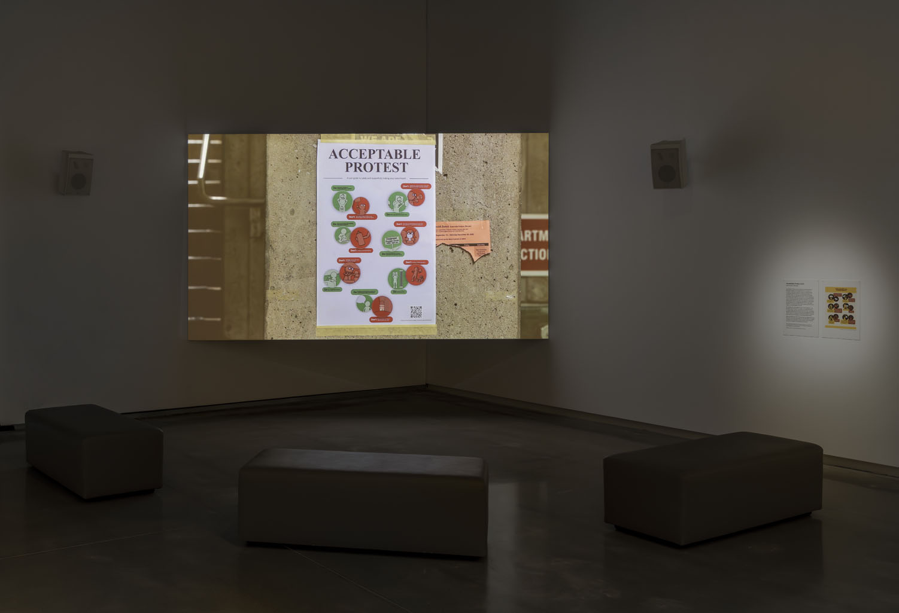

Acceptable Protest
Don't damage or destroy property.
Acceptable Protest is an experimental animated documentary, based on research into and personal experiences of university protest and disciplinary policies in North America in 2024-25, during and after the student encampments for Palestine.
Tracing the absurd logic of sanctioned protest, this short animation satirizes the "Do" and "Don’t” scenarios of a typical university policy poster. The scenarios are connected by the story of a major donation from a weapons manufacturer during a genocide. Within an eerie corporate landscape rendered in contrasting monotones, the student protestors resist shifting definitions of what is 'acceptable.'
If you're interested in organizing a screening on your campus, please email: acceptableprotestfilm @ proton.me




